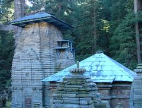

 Uttarakhand as a part of the United Province, 1903 By the medieval period, the region was consolidated under the Garhwal Kingdom in the west and the Kumaon Kingdom in the east. From the 13th-18th century, Kumaon prospered under the Chand Rajas who had their origins in the plains of India. During this period, learning and new forms of painting (the Pahari school of art) developed. The present king of Kumaon is Mahendra Chand of Lamakhet (Pithoragarh), he is married to Gita Chand of Rina and has three childrens (Aakanksha Chand, Mallika Chand, Aryan Chand) Modern-day Garhwal was likewise unified under the rule of Parmar/ Panwar Rajas, who along with a mass migration of Brahmins and Rajputs, also arrived from the plains. In 1791, the expanding Gurkha Empire of Nepal, overran Almora, the seat of the Kumaon Kingdom. In 1803, the Garhwal Kingdom also fell to the Gurkhas. With the conclusion of the Anglo-Nepalese War in 1816, a rump portion of the Garhwal Kingdom was reestablished from Tehri, and eastern British Garhwal and Kumaon ceded to the British as part of the Treaty of Sugauli.